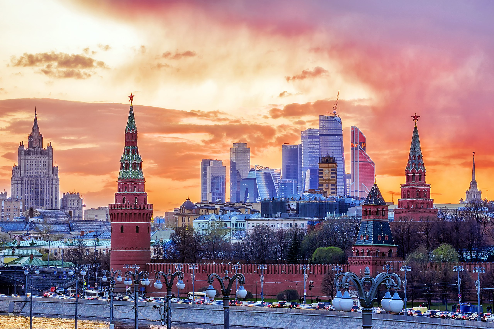

- Sacramento
- London
- Moscow
- Paris
- Roma




Зёльден – курорт в Австрии, расположенный в долине Эцталь в федеральной земле Тироль. На лыжные склоны, в том числе расположенные на горе Гигийох, можно попасть с помощью высокотехнологичных подъемников. Живописная горная дорога Эцталер-Глечерштрассе ведет к ледникам Реттенбах и Тифенбах. Потрясающие виды на Эцтальские Альпы открываются со смотровых площадок на вершинах гор Гайслахкогль, Тифенбахкогль и Шварце-Шнайд, высота каждой из которых составляет более 3000 метров